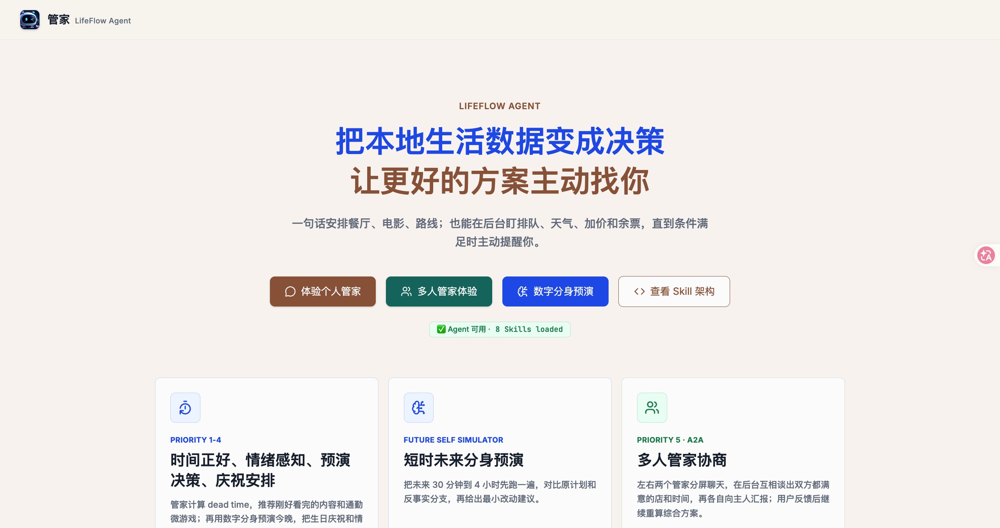

InfiniSynapse×CSDN
作品长廊 · 按行业赛道速览
72 件真实作品
6 大赛道分好了
6 大赛道分好了
来自比赛作品长廊 · 可体验 · 可投票 · 截止 7 月 31 日
72
作品总数
6
行业赛道
7·31
提交截止
职场求职


4

职牌
职牌是一款基于市场数据反向诊断职业身份的 AI 工具。用户上传简历后，AI Agent 从实时…
29票
5

Real Raise：涨薪真实购买力计算器
Real Raise 面向正在评估涨薪、跳槽或生活成本变化的职场人，将税前工资、个税、社保公积…
21票
6

凤栖梧
凤栖梧是一款面向大学生的AI求职陪伴平台。它以拟人化的AI角色“七七”为核心，融合“先接住情绪…
15票
7

就业气象局
融合 14 个就业、教育、城市、职业与生活数据源，通过综合研判、就业周期、城市选择等七个视图，…
14票
8

择途 Zhitu
择途 Zhitu 不是简单的面试题库，而是一套从职业定位到面试提升的 AI 实战系统。基于In…
11票
9

JobHunter Pro — 智能求职聚合平台
一、应用简洁 本产品是全网招聘聚合+AI智能求职工具。一键汇总全网岗位，可视化展示各地招聘热度…
7票
10

OPC Gate｜一人公司政策与落地路线诊断
OPC Gate 面向一人公司创业者，将分散的政策、园区/社区与算力资源转化为可解释、可追溯的…
5票
11

上岸参谋
上岸参谋是一款面向考公/事业编考生的智能择岗分析工具。 解决的问题：面对数万条国考/省考职位，…
3票
财务理财


4

提前退休研究所
提前退休研究所 是一个用真实数据回答"这届年轻人到底几岁能退休"的多源深度研判应用。 延迟退休…
7票
5

股票查询系统
面向庞大股民用户提供查询
7票
6

财格-AI犀利点评你的理财性格
一、应用解决的问题 -------------------------------------…
4票
7

FinPDF Extract
上传金融类PDF文件，提取文件里的Excel表格，支持在线预览、编辑、双屏核对和导出等功能
3票
8

Token体检
Token体检是一款面向 Vibe Coding 开发者和高频 AI 用户的对话使用诊断工具，…
1票
生活决策



4

北京摆摊点位分析
目标用户：想在北京摆摊的个体创业者，尤其是预算有限、需要快速验证首场摊位的新手。 解决痛点：北…
23票
5

脑洞实验室
Thought Experiment Lab（脑洞实验室） 是一个基于 InfiniSynap…
11票
6

明日足球
明日足球是一款面向全球球迷、足球内容创作者和业余教练的世界杯战术分析工具。用户可选择比赛，查看…
8票
7

个人仅供参考
「本人仅供参考」是一款基于AI的多视角自我认知工具——你填一份16题的行为问卷，写三段最近的真…
7票
8

人生模拟器
解决了人闲的没事能干什么的问题。应用通过 InfiniSynapse API 在后台批量生成个…
6票
9

屏时
抽你的屏幕人格 · 生成可分享的 FIFA 式球星卡 · 纯浏览器本地识别，不打扰、不上传
6票
10

AI 装修报价审计员
作品描述： 上传装修报价单（Excel/CSV），AI 联网核查本地市场价，逐项比价、识别 6…
5票
11

群聊气象站
不猜谁喜欢谁，也不给任何人贴标签。我们只观察真实的互动节奏、话题温度和群体参与，让沉默、升温与…
5票
12

装明白｜装修报价与合同风险联审 AI
装明白是一款面向装修业主的报价与合同风险联审 AI。用户上传多家公司报价单、装修合同和沟通承诺…
4票
13

AI旅游助手
还在熬夜翻几十篇游记做旅游攻略？还在到当地才踩天价餐厅、冷门景点大坑？这款 AI 旅游助手彻底…
3票
14

travel-budget-planner
规划你的出行一切
3票
15

智能旅游
当用户注册后在输入框填写想去的地方 智能体自动生成方案 用户相互之间也可以添加好友 也可以在广…
3票
16

智观天象
一、应用简介与使用场景 智观天象 SkyGazer · 智能天气决策系统 SkyGazer 致…
3票
17

逆向罗盘（Return Compass）
逆向罗盘（Return Compass）是一款面向多平台电商团队的退货损耗诊断工具。它支持导入…
3票
18

ReelSpark：基于短剧剧情的即时互动激发平台
ReelSpark 面向短剧平台运营方与内容创作者，解决传统播放中"剧情推进与互动反馈断点"的…
0票
19

帮我找到那个东西
InfiniSynapse 官方商品侦探：即使不知道商品名，也能按用途描述需求，并借助用户自己…
官方示例
产业商业


4

竞品对标分析器
面向智能硬件、消费电子、快消品等实体产品研发与市场团队的 AI 竞品对标 Web 应用。前端基…
27票
5

AI智能售卖机商品推荐
在无人零售领域，为运营商推荐商品补货策略以及销售分析
25票
6

跨境智选 SuperSignal｜基于供需信号的跨境优选决策平台
SuperSignal 是一款面向跨境电商卖家、选品人员和产品创业者的机会判断工具，解决传统选…
17票
7

退货雷达
退货雷达是一款专为中小电商运营团队打造的 AI 售后损失诊断平台，帮助商家从复杂的订单与退款数…
16票
8

ProjectValueLab
ProjectValueLab 是一个面向创业者、投资人、产品经理和创新团队的项目价值分析工具…
7票
9

应用名称 统计分析系统（Statistical Analysi…
应用简介 基于 InfiniSynapse Server API 构建的全国口径统计分析应用。…
6票
10

数鉴交易市场
数据市场缺的不是货架，是成交前的信任。我们做的是「数据验货室」：买方只能提出经卖方批准的问题，…
6票
11

外贸实时获客系统
帮我外贸群体精准实时获取客源，数据源：b2b：阿里国际站、中国制造网、Global Sourc…
3票
12

家居供应链协同平台
面向家居品牌供应链运营人员的风险协同工作台，聚合质量异常、交付延期、库存覆盖不足和供应商表现，…
0票
数据工具


4

产品经理数据汇报工作台
将产品经理日常所需要进行的数据分析几大工作集成到了一个工作台中。按照科学的步骤完成数据分析的所…
18票
5

先鉴
这是一款面向学生、开发者、研究人员和自主学习者的 AI 视频学习助手，解决长视频信息密度不一、…
18票
6

鼹鼠
【应用定位】 鼹鼠（谐音"验数"）是一个数字核查与可信生成引擎：把周报 / PPT / 底稿里…
10票
7

赛场扫描仪
参赛时最怕「赛道已经扎堆还浑然不知」：作品集信息散、方向挤不挤看不清，选题只能凭感觉。赛场扫描…
9票
8

Evidence Desk 专家发现台
面向科研管理、技术尽调、人才寻访与跨学科合作团队的证据型专家发现工具。用户输入中英文研究问题，…
5票
9

智能数据分析工作台
应用简介与使用场景 VibeScope 面向运营人员、内容创作者与中小团队。用户上传 CSV、…
5票
10

RepoPulse｜开源项目运营体检
RepoPulse 面向开源作者、独立开发者和小型研发团队。用户粘贴公开 GitHub 仓库地…
4票
11

DataForNGO Lab — Insight Engine
【解决的问题】NGO（公益组织）项目官员往往缺乏数据科学能力，难以诊断受助项目「为何」表现不佳…
3票
12

析数 · 智能数据分析平台（英文名：Analyx · Inte…
上传数据或一句话填写表单，AI 自动生成专业分析报告——支持联网检索公开信息、在线分享与 PD…
3票
13

报告快写
InfiniSynapse 官方报告工作台：支持资料上传、知识库、结构化长报告、可审计引用、批…
官方示例
医疗 · 科研 · 教育


4

医路通 — 在线问诊与预约挂号系统
解决的问题：传统就医流程繁琐，患者需线下排队挂号、候诊时间长。医路通将问诊预约全流程线上化，让…
10票
5

学习计划助手
学习计划助手是一个把"想学的东西"变成"能照着做的计划"的 AI 工具：你只要填上想学的领域、…
6票
6

明朝那些事儿
1.应用简介： 这个项目的意义，让我们厘清明朝那些事，包含时间线、历代皇帝、人物志、大事记、文…
5票
7

sageteach高中复盘工具
Sage 是面向高中生的学科复盘 App：拍一道错题或聊一下卡点，AI 帮你拆思路、标知识点，…
4票
8

学情罗盘 EduCompass
学情罗盘是一款智能学情分析应用，用于解决成绩、考勤、作业和干预记录分散，数据分析耗时、风险学生…
4票
9

wisp science
一个致力于科研发现的工作台，将会调用InfiniSynapse API 用于科研相关文献的检索
3票
挑一个赛道 · 照着改 · 也能交一版
https://infinisynapse.cn/contest/vibe-coding/gallery